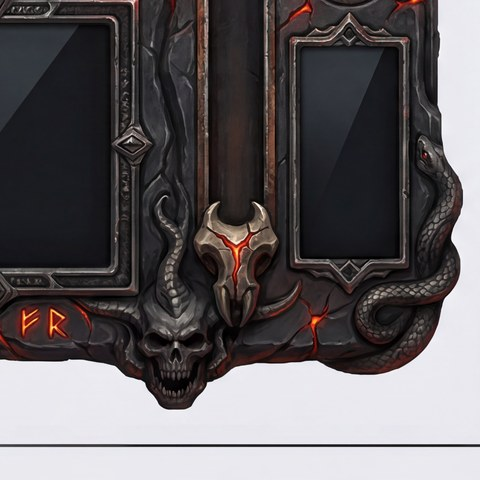
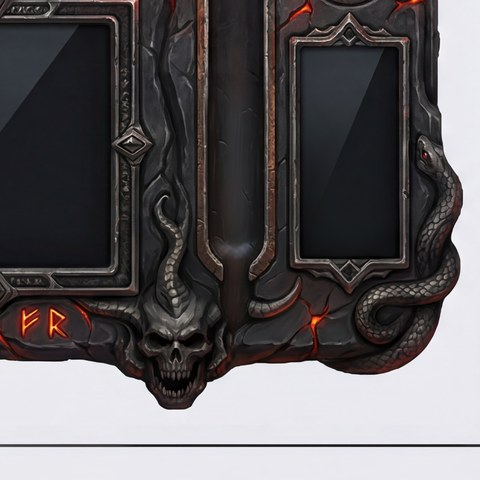
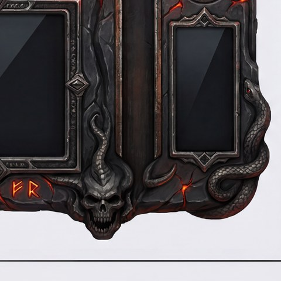

vertex:gemini-3-pro-image-preview (incumbent baseline) · vertex:gemini-2.5-flash-image (winner) · openai/gpt-image-2 (fallback) · fal-ai/finegrain, fal-ai/flux-pro/erase, fal-ai/object-removal/mask, fal-ai/bria/eraser (ruled out) · google/gemini-2.5-pro via openrouter/router/vision (VLM judge, ~$0.01–0.03/call) · local BiRefNet (matte, $0).
Total measured spend across the erase bake-off's 4 logged cost_log.json arms: ≈$1.91 (excludes Arm 1's original run, separately reported at ≈$2.05 in its own doc — not double-counted here since it predates these 4 files).ERASE_MODEL_CHAIN), ~6× cheaper than the old Vertex-only default.5 bake-off arms, escalating in rigor. Cheap dedicated (no-prompt) erasers were ruled out entirely — they lack a world-model of "what should be here" and hallucinate or barely touch the defect. The deciding run (Arm 5) found the earlier "preserve the glow" prompt clause was itself the bug: a plain erase prompt handles ornate emissive material correctly on its own.
| Arm | What it tested | Result | Live proof |
|---|---|---|---|
| 1 | Original 6-model, 5-skin bake-off, tight crop | Vertex 5/5 (100%) · LaMa 2.5/5 · Bria 63% (n=2) · Qwen 2.5/5 · Z-Image 0/5 · FLUX Pro/Dev Fill 0/5 | inpaintbake/index.html |
| 2 | Whole-slot masking (vs. tight crop) | NEGATIVE for generative erasers — Vertex drops 5/5→2/3 at slot scale; only classical LaMa stays consistent | inpaintbake/slotwide/index.html |
| 3 | 5 strong editors, 3 skins (diablo-gothic, wc-goldshield, fallout-vault) | Vertex 3/3 · gemini-2.5-flash 2/3 · gemini-3.1-flash 1/3 · finegrain 0/3 · gpt-image-2 1/3 | inpaintbake/editors/index.html |
| 4 | Dedicated erasers + "preserve the glow" clause — RULED OUT 0/3 | Vertex 3/3 (reused) · gemini-2.5-flash-glow 2/3 (over-corrects, hallucinates new glow ornamentation) · flux-pro/erase 0/3 · object-removal 0/3 | inpaintbake/arm4/index.html |
| 5 | Gemini vs GPT, plain prompt (no glow clause), 5 skins — WINNER | gemini-2.5-flash 4/4 clean on every genuine groove, incl. ornate rune-glow, @ $0.039/call · gpt-image-2 3/4 + 1 soft @ $0.0548/call, 1 catastrophic black-square failure | inpaintbake/arm5/index.html |



genskin.py:edit_vertex() hardcoded imageConfig.imageSize:"4K" on every call regardless of crop size — every Vertex repair, including 1024px crops, was silently billed at the 4K tier ($0.241 vs. the ~$0.136 a crop-size estimate assumed). Fixed separately, commit 0c4b424c.Shipped: ERASE_MODEL_CHAIN = ["gemini-2.5-flash", "gpt-image-2"] in erase12.py, commit fcab53d4. Full method: 2026-07-12-inpaint-bakeoff.md · consolidated write-up §1.
gate.seek_cov 1.04 → 1.00, real-runtime overshoot ~24px → ≤0.15px, all 5 flagged skins.Root cause: extract12.py's travel stacked two widenings — the intentional outward "coverage span" walk, plus a redundant, unconditional +2%-of-span pad — and build_player.py positioned the thumb + track/fill overlay to travel's outer edges with no clamp against the painted groove anywhere downstream. Fix: drop the pad; hard-clamp travel to device at the single point every consumer reads it from.
| skin | axis | overshoot before | overshoot after |
|---|---|---|---|
| diablo-gothic | vertical | ~24px / 3712px (0.6%) | 0px |
| fallout-vault | horizontal | ~11px / 460px (2.4%) | 0px |
| n64-cutscene | horizontal | ~4.2px / 460px (0.9%) | 0px |
| ps1-crunchy | horizontal | ~4px / 460px (0.9%) | 0px |
| claymation | horizontal | ~3.2px / 460px (0.7%) | 0px |
Measured directly on the shipped player.html via Playwright getBoundingClientRect(), both travel extremes, real interaction — not a reimplementation. Shipped commit 0d750450. Full method: 2026-07-12-seek-travel-overshoot.md.
| Approach | Cost | Verdict |
|---|---|---|
| A — $0 CSS-rendered shadow socket | $0 | Not shippable — flat gradient, no metal texture, visible soft blur under the rim |
| B — masked AI inpaint of a shaped recess | ~$0.04/edit | Best cost/quality — plausible depth/rim, no manual position correction needed |
| C — housing baked into the same paint call as the device | ~$0.24/regen | Best quality — 100% material/lighting consistency; needed one fix: track-walk under-measured housing width by ~13% |
Verdict computed by google/gemini-2.5-pro via openrouter/router/vision (~$0.034/call), adjudicated against direct pixel inspection per verify-outputs-rule — one VLM overclaim ("dogbone waist silhouette completely lost" on A) was overruled on direct crop inspection. TODO'd in commit 8eb20f51; gated on the coherent switch/toggle pass, not yet landed.
| skin | disposition | note (verbatim) |
|---|---|---|
| diablo-gothic | accept | "near perfect. just the css goes outisde the bounds of slider slot... switch needs rework, doesnt fit slot. maybe candinate for inpaint." |
| claymation | reject | "button alingment complete fail. css outside slot again on left side." |
| fa-pod | reject | "almost perfect. button silhouettes off for all buttons except play pause. swtich is way too huge and out of propotion. vlm should have caught this." |
| fallout-vault | reject (erase: bria) | "swithc is also way oit of propotion... css slider compeltely outside slot on both sides. either erase candidnate is fine here." |
| myst-arcanum | not reviewed | page failed to load during review (open bug, below) |
| n64-cutscene | reject | "fine but CSS FOR SLIDER OUTSIDE SLOT!!!! switch doesnt match swtich slot." |
| ps1-crunchy | reject | "queue button not detected... two of same button baked. CSS OUTISDE SLOT FOR SLIDER!!! switch - same problem." |
| steam-porthole | reject (erase: vertex) | "vertex is better but bria is acceptable. you didnt fix any of the issues i mentioned last time.!!!!" |
Verbatim human verdicts preserved per human-labeled-data-rule — source: review-round3-decisions.json, commit 36a0a9b3. The CSS-slider defect every reject cited is now fixed (§2); it landed after this review round, so a re-review would likely change several of these dispositions.
Axis-separated re-score (same 7 gens, $0, direct full-res re-inspection): 6/7 render a coherent, theme-appropriate tick/mark system; 5/7 are shape-distinct without relying on text at all (diamonds, LED dots, gear-tooth rings, L-brackets). The one real recurring defect: the clause's own MIN/MAX/CENTER vocabulary baking in as literal engraved text on 3/7 gens — a prompt-wording bug, not a capability failure. The in-call JSON rotation self-report is separately confirmed unusable (verbatim prompt-echo, measures nothing).
Correction shipped commit 1a45d88c. Full write-up: 2026-07-11-knob-tick-provisioning.md.
detect_bbox() mis-targets the wrong slot on ambiguous skins — confirmed by Arm 5: on steam-porthole the crop it selected was a play/pause button, not the seek thumb, dooming both erase models regardless of chain choice.sprite-fit:shuffle gate regression, cross-roster, timing-correlated with the in-progress TOGGLE_TRACK_ENABLED feature (commit 1a82751e). Round-3's re-extracts sit uncommitted, held for the coherent toggle/switch pass.page.waitForFunction timeout, 0 .pbtn elements, a JS pageerror. Whether it shares the same root cause as an earlier, different-skin instance is not confirmed — flagged, not diagnosed.Full consolidated write-up (all sections above, plus method detail): docs/experiments/2026-07-12-erase-and-slider-verdicts.md
SETTLED, shipped, live today:
ERASE_MODEL_CHAIN (gemini-2.5-flash → gpt-image-2), fcab53d4 — 4/4 clean, ~6× cheaper than the old default.NEXT, gated on the switch/toggle decision:
detect_bbox() mistargeting and the sprite-fit:shuffle regression, is what stands between round-3's 1/9 accept rate and a round-4 re-review.